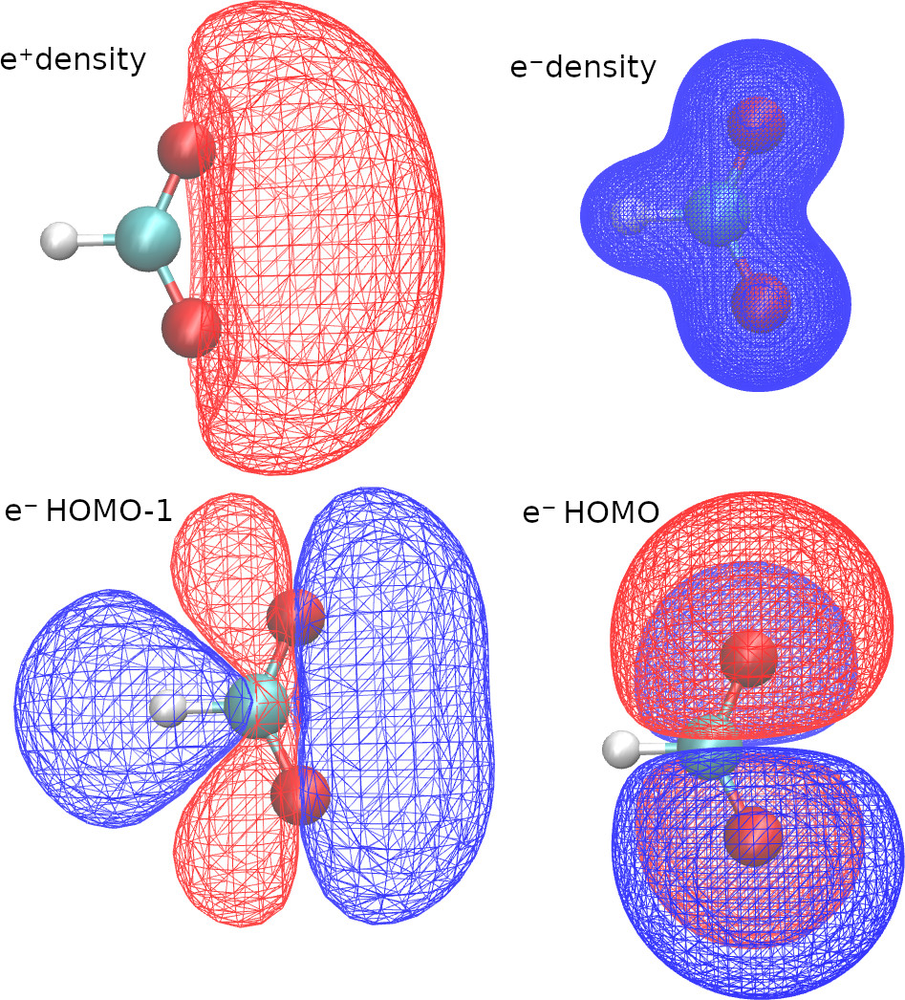

Cubes examples
With openLowdin, we can generate orbital and density Gaussian cube files (https://h5cube-spec.readthedocs.io/en/latest/cubeformat.html ). Here we present an example for positronic formate
SYSTEM_DESCRIPTION='Positronic formate'
GEOMETRY
e-(C) cc-pVDZ 0.0000000 0.0000000 0.3157740
e-(H) cc-pVDZ 0.0000000 0.0000000 1.4510170
e-(O) aug-cc-pVDZ 0.0000000 1.1357680 -0.2091040
e-(O) aug-cc-pVDZ 0.0000000 -1.1357680 -0.2091040 addParticles=1
e+ PSX-DZ 0.0000000 1.1357680 -0.2091040
e+ PSX-DZ 0.0000000 -1.1357680 -0.2091040 addParticles=-1
C dirac 0.0000000 0.0000000 0.3157740
H dirac 0.0000000 0.0000000 1.4510170
O dirac 0.0000000 1.1357680 -0.2091040
O dirac 0.0000000 -1.1357680 -0.2091040
END GEOMETRY
TASKS
method = "RHF"
END TASKS
OUTPUTS
densityCube cubeSize=5 point1=0.0 0.0 0.0 species="E-" pointsPerDim=100
densityCube cubeSize=20 point1=0.0 0.0 -2.5 species="E+" pointsPerDim=50
orbitalCube cubeSize=15 center=0.0 0.0 -2.5 species="ALL" scanStep=0.5
orbitalCube cubeSize=10 center=0.0 0.0 0.0 species="E-" orbital=11 scanStep=0.25
END OUTPUTS
With the first two lines in the OUTPUTS block, we request density cubes for electrons and positrons. Here, we use a different size for each cube, because the positronic density is more delocalized.
With the last two lines of the OUTPUTS block, we request orbitals cubes. When we select “species”=”ALL”, openLowdin will generate a cube with the HOMO of each species. We can also select a specific orbital, by selecting a species and an orbital number. In this example we requested the HOMO-1 of the formate anion.
We pass the option “center” or “point1” to define the origin of the cube, and we use the “pointsPerDim” or the “scanStep” options to adjust its resolution. “scanStep” sets the separation between grid points, whereas “pointsPerDim=N” sets the total number of points per side, such that the number of points in the cube is N3.
Therefore, running this calculation produces five cube files, with the filenames provided in the output.
--------------------------------------------------------
DENSITYCUBE 1
for species: E-
cube size (a.u.): 9.44863
cube center (a.u.): 0.00000 0.00000 0.00000
No. steps: 100 100 100
FileName: HCOOPs.HF.densOrbCube.E-.dens.cub
--------------------------------------------------------
--------------------------------------------------------
DENSITYCUBE 2
for species: E+
cube size (a.u.): 37.79452
cube center (a.u.): 0.00000 0.00000 -4.72432
No. steps: 50 50 50
FileName: HCOOPs.HF.densOrbCube.E+.dens.cub
--------------------------------------------------------
--------------------------------------------------------
ORBITALCUBE 3
for all species
for the highest occupied orbital
cube size (a.u.): 28.34589
cube center (a.u.): 0.00000 0.00000 -4.72432
No. steps: 60 60 60
FileName: HCOOPs.HF.densOrbCube.E-.orb12.cub
FileName: HCOOPs.HF.densOrbCube.E+.orb1.cub
--------------------------------------------------------
--------------------------------------------------------
ORBITALCUBE 4
for species: E-
for orbital: 11
cube size (a.u.): 18.89726
cube center (a.u.): 0.00000 0.00000 0.00000
No. steps: 80 80 80
FileName: HCOOPs.HF.densOrbCube.E-.orb11.cub
--------------------------------------------------------
The VMD software (https://www.ks.uiuc.edu/Research/vmd/ ) is an excellent tool to visualize the cube files. Here are some VMD plots obtained from the positronic formate cubes
{kind=link}
We can also request cubes for localized orbitals. The keywords required are identical to those employed in the Molden examples.
Excited states
For configuration interaction calculations, we can generate cubes for excited state natural orbitals and excited state densities. For example, with the following CI singles calculation,
SYSTEM_DESCRIPTION='Positronic formate'
GEOMETRY
e-(C) cc-pVDZ 0.0000000 0.0000000 0.3157740
e-(H) cc-pVDZ 0.0000000 0.0000000 1.4510170
e-(O) aug-cc-pVDZ 0.0000000 1.1357680 -0.2091040
e-(O) aug-cc-pVDZ 0.0000000 -1.1357680 -0.2091040 addParticles=1
e+ PSX-DZ 0.0000000 1.1357680 -0.2091040
e+ PSX-DZ 0.0000000 -1.1357680 -0.2091040 addParticles=-1
C dirac 0.0000000 0.0000000 0.3157740
H dirac 0.0000000 0.0000000 1.4510170
O dirac 0.0000000 1.1357680 -0.2091040
O dirac 0.0000000 -1.1357680 -0.2091040
END GEOMETRY
TASKS
method = "UHF"
configurationInteractionLevel="CIS"
END TASKS
CONTROL
numberOfCIstates=2
CIstatesToPrint=2
END CONTROL
OUTPUTS
densityCube cubeSize=20 point1=0.0 0.0 -2.5 species="E+" pointsPerDim=50 state=1
densityCube cubeSize=20 point1=0.0 0.0 -2.5 species="E+" pointsPerDim=50 state=2
END OUTPUTS
we get the ground and first-excited state positronic densities.